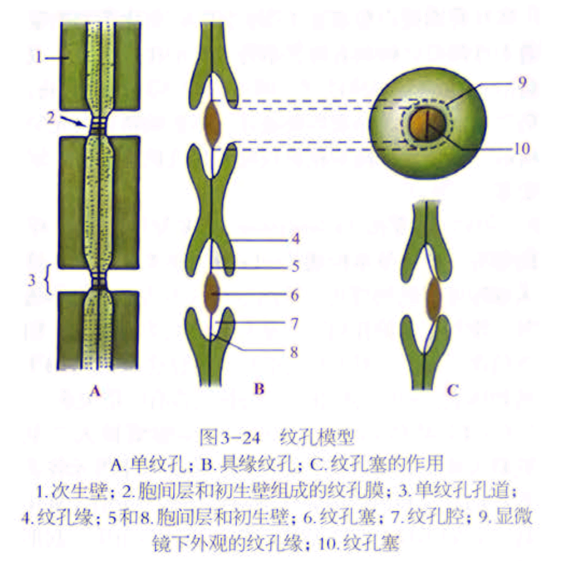
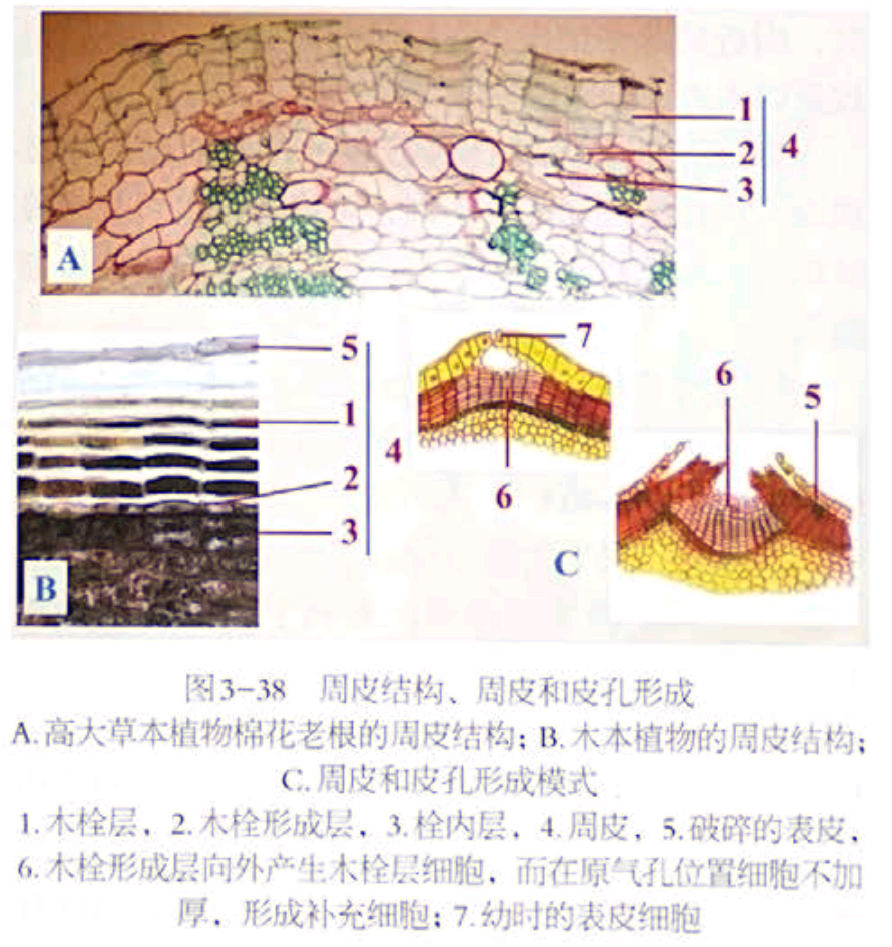
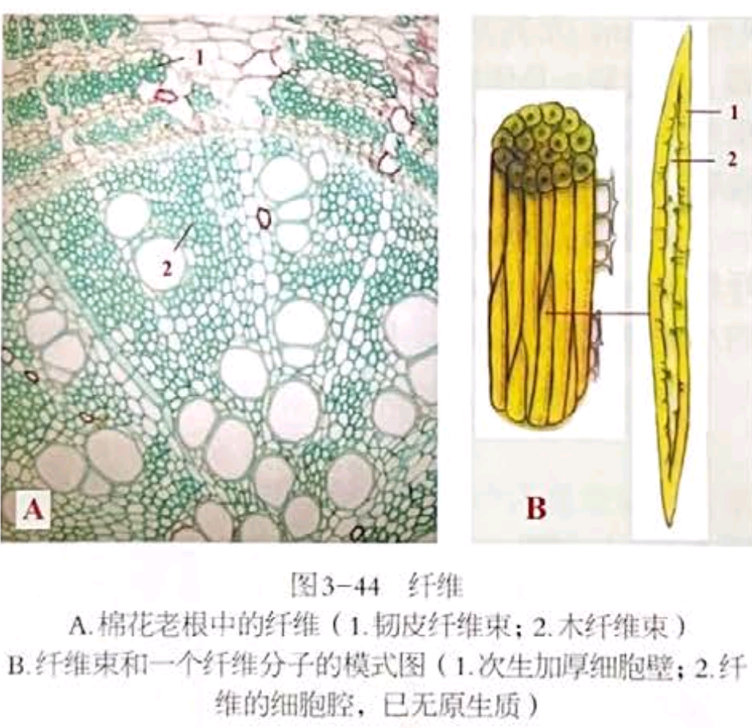
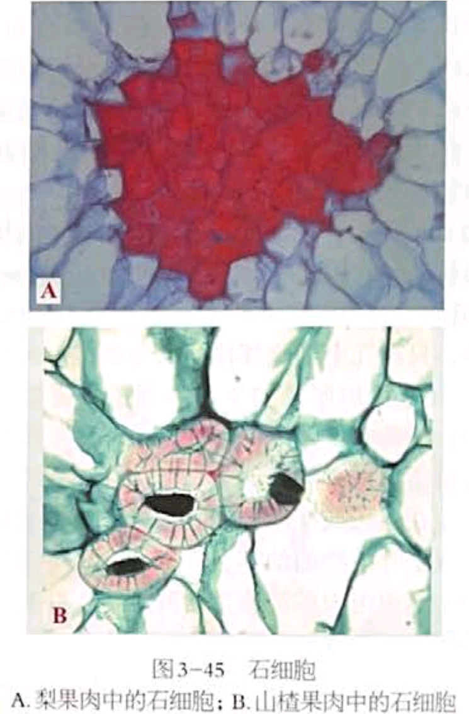
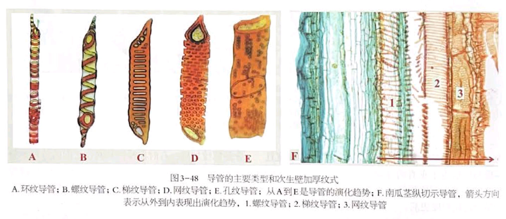

细胞结构
1、质体：绿色真核植物所特有的细胞器。尚未分化的称为原质体、前质体 根据色素与功能不同分为叶绿体、有色体、白色体
- 叶绿体：双层质体被膜、基质、类囊体（黄化栽培：前片层体、前层膜体、黄化质体），也可以由造粉体转变而成
- 有色体：多从叶绿体转化而来（果实绿转红）、造粉体形成（胡萝卜的根）
- 白色体：造粉体（积累淀粉）；造蛋白体（含蛋白质）；造油体（含油脂）
2、细胞壁：胞间层、初生壁、次生壁；一般认为保持有生活原生质体的细胞，不具次生壁
- 胞间层：又中胶层、主要成分果胶质
- 初生壁：成分纤维素、半纤维素、果胶。非常薄的区域：初生纹孔场
- 次生壁：并非所有细胞有，加厚，缺乏果胶质，常有木质素等物质填充。
多细胞植物体，细胞间通过纹孔和胞间连丝互相紧密联系形成统一体，相邻两个细胞的纹孔成对形成纹孔对，中间的胞间层和初生壁为纹孔膜
细胞壁的特化：木质化、角质化、栓质化、矿化、黏液化

3、植物细胞后含物：淀粉（淀粉粒，常可见脐）；蛋白质（糊粉粒，大量糊粉粒：糊粉层）；脂肪和油 晶体：常为草酸钙，沉积在液泡内（棉花茎细胞中棱形晶体和晶簇）
植物组织
1、分生组织和成熟组织（薄壁组织、机械组织、保护组织、输导组织、分泌结构）
-
分生组织：顶端xx（根和茎的主干及其分支顶端）； 侧生xx（维管形成层和木栓形成层（薄壁细胞转化而来），与次生生长密切相关）；居间xx（穿插在茎、叶等器官成熟组织中，顶端分生组织在某些器官中的局部保留）。 根据来源和性质不同：原xx、初生xx、次生xx
-
保护组织：表皮（初生保护组织，普遍存在表皮毛或腺毛等附属物）；周皮（次生保护组织，木栓细胞和木栓薄壁细胞组成）（周皮，向外木栓层，向内栓内层；茎原气孔处木栓形成层向外分裂出薄壁细胞，补充细胞，突破周皮形成皮孔）

-
薄壁组织：数量最多、分布最广，薄壁细胞组成。吸收组织、同化组织、贮藏组织、通气组织、传递组织
-
机械组织：机械支持作用，厚角组织（初生的机械组织，厚角细胞组成，细胞壁（初生壁）不均匀加厚，角隅部分加厚，eg.芹菜、南瓜茎和叶柄）；厚壁组织（同时有初生壁和次生壁的厚壁细胞组成，均匀增厚的次生壁且常木质化，分为纤维、石细胞）



-
输导组织：导管（存在于被子植物木质部，每一个细胞称为导管分子，侧壁不同程度地增厚和木化，具纹孔，发生水的横向运输）（环纹、螺纹、梯纹、网纹、孔纹）；管胞（多数石松、蕨类、裸子的唯一输水结构，大多被子植物中导管和管胞同时存在）

筛管（存在于被子植物韧皮部，管状活细胞，只具初生壁，端壁小孔——筛孔，具筛孔区域——筛域）（伴胞紧贴筛管分子旁的薄壁细胞，无运输功能，发挥营养物质装载作用）；筛胞（石松、蕨类、裸子中）
-
分泌结构：外分泌结构（将分泌物排到植物体外，腺毛、蜜腺、盐腺）；内分泌结构（分泌细胞、分泌腔（溶生型——柑橘；裂生型——松柏类木质部的树脂道，漆树韧皮部的漆汁道）、乳汁管（无节一个细胞发育而来eg.桑科、夹竹桃科、菊科、大戟属；有节许多圆柱形细胞连接而来eg.菊科、罂粟科、旋花科、番木瓜科）
 2、**维管组织**：由于木质部和韧皮部的主要组成分子是管状结构，又将他们称为维管组织
**维管束**：木质部和韧皮部共同组成的束状结构（有限维管束：形成层完全分化，**大多单子叶植物**；无限形成层：保留有束中形成层）
2、**维管组织**：由于木质部和韧皮部的主要组成分子是管状结构，又将他们称为维管组织
**维管束**：木质部和韧皮部共同组成的束状结构（有限维管束：形成层完全分化，**大多单子叶植物**；无限形成层：保留有束中形成层）